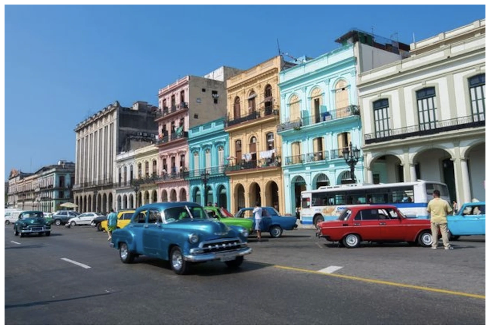

Viaje a Cuba
Put these 10 activites on your itinerary if you're headed to Cuba_
_
_
_

# Top 10 Travel Experiences in Cuba
See the top ten picks for things to do in this Caribbean island nation.
*
*
BY*CHRISTOPHER P. BAKER**
*
PUBLISHED JANUARY 7, 2016
12 MIN READ
*
*
## Saunter the Colonial Plazas of Old Havana
Founded in 1519 and declared a UNESCO World Heritage site in 1982, beguiling and beautiful Habana Vieja (Old Havana) is today a remarkable 350-acre trove of cobbled plazas and colonial buildings fringed with colonnaded arcades. The boot steps of conquistadors still echo down narrow streets, transporting you back through the centuries. Plan at least two days to explore fully. Start at airy, tree-shaded Plaza de Armas, site of the city’s founding. Delve inside the Castillo de la Real Fuerza—the oldest fort in the Americas—to admire its superb museum of maritime history; and the Palacio de los Capitanes Generales, the glorious former Spanish governors’ palace, now the Museo de la Ciudad teeming with historical artifacts. Now stroll to Plaza de la Catedral to admire its exquisite baroque cathedral: “Music turned to stone,” thought Cuban novelist Alejo Carpentier. Next, follow Calle Mercaderes south to magnificently restored Plaza Vieja, replete with sites of interest: Don’t miss the Museo de Naipes (Museum of Cards). Cuba, inhabited by 91,000 people, is far from an abandoned stage set and more like a living museum. To savor its earthy, timeworn appeal, saunter southern Habana Vieja, a vibrant ecclesiastical zone where centuries-old grime is soldered by tropical heat into dilapidated façades.
## Delve Into the Tobacco Fields of Viñales, Pinar del Río
The Valle de Viñales, a three-hour drive west of Havana, is renowned for its sensational landscapes. Arriving is a jaw-dropper as you suddenly emerge into the broad vale framed by soaring mogotes—sheer-sided, conical limestone hills underlain by subterranean caves. The valley is quilted with tobacco fields, or vegas, and studded with tent-shaped thatched huts, where fresh-cut leaves are cured on poles until brown, like smoked kippers. Ox-drawn ploughs add a sense of time standing still as they till the rust-red soils into furrows. At its heart, Viñales village resounds to the clip-clop of hooves and the crowing of roosters. A highlight is a boat journey amid dripstone formations and the gloom of the Cueva del Indio. Adventurers can hike or take a horseback ride to the top of the mogotes, spelunk the labyrinthine Cuevas de Santo Tomás, or even scale the mogotes with a guide. Don’t leave before heading to the Hotel Los Jazmines, atop the valley’s southern rim, for spectacular sunset or sunrise views.
## Ride in a Classic 1950s American Automobile, Havana
The visitor’s first reaction to Havana is of being caught in a 1950s time warp. Yank tanks from the heyday of Detroit are everywhere. American cars flooded Cuba for 50 years culminating in the Fulgencio Batista era, when no other country in the world imported so many Chryslers and Chevys and Cadillacs. Then Fidel Castro and company made a revolution and spun off into Soviet orbit, invoking a U.S. trade embargo that in terms of American automobiles has cast a time-warp spell over Cuba. “Was this a movie set or a real city?” wrote Tom Miller in Trading With the Enemy. “Cars missing from American highways for decades lined every block.” Don’t just ogle. Hop in a colectivo (a shared taxi that runs along fixed routes) to ride with Cubans squeezed like sardines in a tin as the radio blasts out a rumba. Now treat yourself by hiring a convertible—perhaps a 1958 Edsel or Cadillac Eldorado with fins sharp enough to draw blood—for a sightseeing ride around town.Travel Tip: You can hire private classic-car taxis outside the deluxe hotels, where the best convertibles are to be found.
## Hike to Castro’s Rebel Army Headquarters in the Sierra Maestra, Granma
Cuba’s highest mountains culminate atop Pico Turquino (6,476 feet). Incised with precipitous ravines and sparsely inhabited, this forbidding and thickly forested terrain was the setting for Fidel Castro’s ridgetop headquarters during the nearly three-year armed struggle (1956-58) to oust dictator Fulgencio Batista. The site—La Comandancia de la Plata—is reached by a two-hour hike along a narrow trail. Now a museum, the restored rebel army HQ includes Castro’s office and sleeping quarters and a basic infirmary that was run by Che Guevara. A guide is compulsory. Arrangements can be made with EcoTur in the hamlet of Santo Domingo, where a rustic riverside hotel squats in a tight-hemmed valley. A 4WD taxi will haul you up the near vertical switchback ascent to the trailhead at Belvedere Alto de Naranja.Fun Fact: Castro’s hut had no discernible doorway and featured an escape hatch into the stream below.
## Thrill to the Tropicana Cabaret, Havana
“Señoras y señores … showtime!” The lights go down. The house band belts out a rumba. And floodlights flick on to sweep over feathered, scantily clad showgirls, or figurantes, parading among the palm trees like tropical birds. Welcome to the Tropicana, Cuba’s open-air extravaganza now in its eighth decade of Vegas-style, stiletto-heeled paganism. Acrobats and crooners are also featured in this flamboyant cabaret espectáculo (show), highlighted by the figurantes’ sashaying kaleidoscopically in minimalist yet sensational costumes. Nat King Cole, Josephine Baker, and Carmen Miranda once headlined "Paradise Under the Stars," which opened on New Year’s Eve 1939 in an open-air theater in the district of Marianao, with palms and other tropical trees as part of its setting. The venue is still the original. Every Cuban town has at least one espectáculo, although the Tropicana is a tourist-only affair due to its exorbitant cost. The Tropicana is considered a national institution—the pinnacle of a performance art as quintessentially Cuban as cigars and rum. “Cabarets are part of Cuban tradition. They’re integral to Cuban culture,” says Sandra Levinson, executive director of the Center for Cuban Studies in New York.Travel Tip: Male patrons are given a cheap machine-rolled cigar. If you plan on smoking, bring your own hand-rolled cigar.
## Visit Fidel Castro’s Birthplace at Birán, Holguín
Finca Manacas, the country estate where Fidel Castro was born in 1926, is now open to the public as Museo Conjunto Histórico Birán. This off-the-beaten-track venue provides a fascinating insight into Castro’s formative years, although the guided tour and exhibits paint an idealized portrait of Castro’s early life. You’ll be shown Castro’s crib; portraits of his father, Ángel Castro y Argiz, a wealthy patriarch who owned almost every business for miles around; and portraits of his mother, Lina Ruz González, the family housemaid who Castro’s father married in 1943 after divorcing his wife. Yes, Castro and his brother Raúl were born out of wedlock. The parents are buried in a simple grave next to the schoolhouse, where Castro’s desk—surprise!—is front row center. Eleven of the estate’s original 27 structures still stand, although the family home was rebuilt after a fire. It displays Castro’s childhood hunting rifle, his baseball mitt and uniform, and other original memorabilia.
## Explore the Cobbled Streets of Trinidad, Sancti Spíritus
Founded as one of Cuba’s original seven cities in 1514 by conquistador Diego Velázquez, Trinidad is Cuba’s crown jewel of colonial cities. Three centuries ago it rose to wealth as a center for sugarcane production and the slave trade. Declared a UNESCO World Heritage site in 1988, its historic, traffic-free core has been restored. It’s sheer joy to serendipitously wander the sloping cobbled streets lined with exquisite 18th- and 19th-century buildings—each painted in ice-cream pastels—that evoke the wealth of a bygone era, when the nearby Valle de los Ingenios (Valley of the Sugar Mills) boasted at least 50 mills. The town thrives on tourism. Art galleries, crafts shops, plus private restaurants and casas particulares (private homestays) abound. Yet the mood and yesteryear pace are unsullied. Tucked on a hillside between the Sierra Maestra and the turquoise Caribbean Sea, it offers fine views and easy access to both.
*##
*
## Go Birding in Parque Nacional Ciénaga de Zapata, Matanzas
Crocodiles, manatees, garfish, and at least 258 of Cuba’s 374 bird species inhabit the Zapata Swamps. Protected within the UNESCO Reserva de la Biosfera Ciénaga de Zapata, the 1,893-square-mile Zapata Swamp National Park unrolls across a vast triangular peninsula of freshwater and brackish lagoons, coastal mangroves, and reedy swamps studded with woodsy thickets. Resembling the Everglades of Florida, the swamps form the largest wetland ecosystem in the Caribbean as well as Cuba’s premiere birding venue. Zapata boasts 21 of the island’s 25 endemic bird species. Three species are found only here: the Zapata sparrow, Zapata wren, and critically endangered Zapata rail, sighted in 2014 for the first time in 40 years. Garrulous Cuban parrots fly overhead, squawking all the while: The population is recovering from near extinction thanks to a local breeding program and educational efforts to stop the local pet trade. The beyond gorgeous tocororó, or Cuban trogon, is easily spotted. Bring binoculars, though, to spy the zunzuncito—the bee hummingbird (Cubans call it pájaro mosca, or fly bird). It’s the world’s smallest bird. Roseate spoonbills and neon-pink flamingos strut around Laguna de las Salinas on Zapata’s southern shores. Migratory waterfowl flock in October through April. Hire experienced guides (compulsory) at the park headquarters at Playa Larga, site of the Bay of Pigs invasion in April 1961.
*
*
## Eat Authentic Cuban Food in Baracoa, Guantánamo
Local Cuban fare—comida criolla—is country food, relying on lowly staples, and varies little throughout the country. Roast chicken and pork are the ubiquitous base for most meals, usually accompanied by rice and black beans (sometimes cooked together as congrí), plantains (plátanos), and starchy root vegetables (viandas) such as sweet potato (boniato) and cassava (yucca). Cuba’s extreme northeast, around Baracoa, is the only region that can claim a distinct cuisine. Coconut milk is the main ingredient, infusing divine flavors when cooked with spinach-like calalú or with crab and grated plantain simmered inside a banana leaf to make batán. Shredded coconut meat mixed with papaya, orange, and sugar combine to make an ambrosial dessert called cucurucho. Cacao is another local staple, providing the main ingredient for chocolate and various drinks. Tiny endemic fishes called tetí are used in dishes that trace a lineage back to the indigenous Taino people. Delicious!Travel Tip: To savor local fare, dine at El Poeta, a paladar (private restaurant) whose owner, Pablo Leyva, sings impromptu verse.
## Be Awed by the Parrandas de Remedios, Santa Clara
It could well be the world’s wildest fireworks extravaganza, a tropical yuletide bacchanal that will replay in your mind forever. Some 14 communities of the Villa Clara province hold Mardi Gras-style festivals called parrandas at various times of the year. But the singularly beautiful colonial city of Remedios claims the largest, the most famous, and by far the most flamboyant. If you’re visiting Cuba during Christmas, this is the place to be. Dating back to the 19th century, parrandas are friendly battles in which the townsfolk divide into two historic camps and compete to see who can produce the most impressive parade float (carrozas) and giant neon-lit static displays (trabajos de plaza) and, of course, the most insane fireworks demonstrations. Each camp is represented by a mascot. The Sansacrices (from Remedios’s San Salvador district) are represented by a rooster; their rivals, the Carmelitas (from El Carmen), are represented by a hawk. There are no judges or juries. Common consent decides who wins.Travel Tip: Don’t wear flammable clothing, and don a wide-brimmed hat. Be warned: Errant homemade rockets whiz through the streets, and giant homespun Catherine wheels the size of tractor tires often spin out of control.